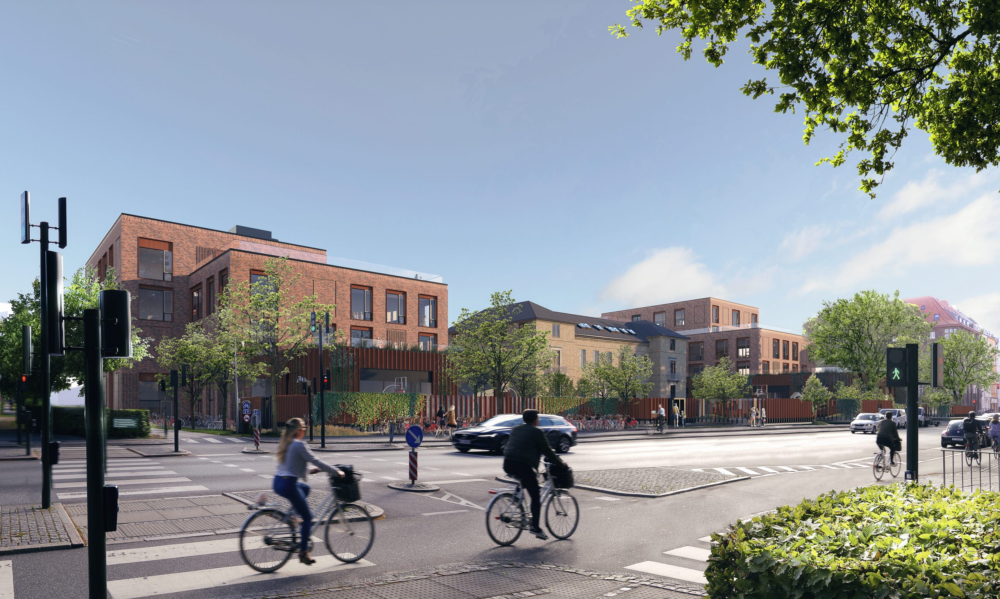

Sted: Frederiksberg
Arkitekt: Holscher Nordberg
Periode: 2018-2023
Prins Henrik Skole på Frederiksberg flytter fra sin nuværende placering på Værnedamsvej til helt nye visionære rammer på Rolighedsvej. Den smukke bevaringsværdige bygning på grunden får en central placering i det nye byggeri, her indrettes læringscenter og administration. Udenom opføres den nye skole.
Bygningskroppe i forskellige niveauer skyder sig op igennem et sammenhængende stueplan. Tagene indrettes til ophold og legepladser for børnene. Byggeriet opføres med stort fokus på bæredygtighed, indeklima, lys, luft, lyd og design.
Der bygges til i alt ca. 1.000 børn, herunder:
VITA er ingeniør på projektet.
Billeder: Holscher Nordberg